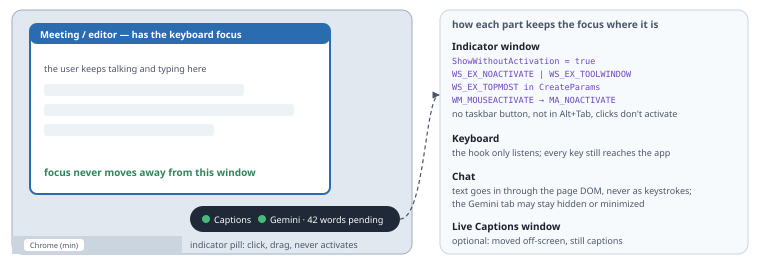

اپ تقریباً رابط کاربری ندارد، و همین عمدی است. یک آیکون در tray و یک نشانگر کوچک کپسولی شکل (pill) که همیشه روی صفحه
است: ● Captions ● Gemini · 42 words pending. سختترین شرط این بود که هیچکدام، حتی با کلیک، فوکوس کیبورد را
از پنجرهای که کاربر در آن کار میکند نگیرند.

ShowWithoutActivation باعث میشود نشان دادن پنجره آن را فعال نکند.WS_EX_NOACTIVATE به ویندوز میگوید این پنجره هرگز پنجرهی فعال نشود؛ WS_EX_TOOLWINDOW آن را
از نوار وظیفه و از Alt+Tab بیرون نگه میدارد.WS_EX_TOPMOST در CreateParams تنظیم میشود، نه با ویژگی TopMost در
WinForms، چون آن setter ممکن است پنجره را فعال کند.WM_MOUSEACTIVATE با MA_NOACTIVATE جواب داده میشود؛ پس کلیک (برای باز کردن پنل متن pending) و
کشیدن (برای جابهجا کردن) فوکوس را تغییر نمیدهند.
کاربر وسط گفتوگوست و نباید چیزی بخواند یا ببندد. نشانگر برای ۱٫۵ ثانیه پیام کوتاهی مثل Sent ✓ یا Queued نشان میدهد
و یک صدای کوتاه (برای ارسال، صف و خطا متفاوت) پخش میشود. صداها در زمان اجرا ساخته میشوند و آیکون tray هم (با نقطهی
سبز یا قرمز) در زمان اجرا کشیده میشود؛ هیچ فایل منبع اضافهای لازم نیست.
Hide Live Captions window پنجرهی Live Captions را بیرون از صفحه میبرد (زیرنویس ادامه دارد) و هنگام خروج آن را
دقیقاً سر جایش برمیگرداند.اسکریپت tools/keytest/ui-test.ps1: کلیک و کلیک سهگانه پنل را باز و بسته کرد، کشیدن جای نشانگر را عوض کرد و بعد
از راهاندازی دوباره همانجا ماند، و در همهی موارد پنجرهی جلو عوض نشد. در تست پایانی، فوکوس در طول هر ارسال روی پنجرهی
در حال استفاده ماند.
The user is in a meeting, so nothing may steal focus. The indicator is a custom-painted WinForms window that shows without activation, uses the NOACTIVATE and TOOLWINDOW extended styles, sets TOPMOST in CreateParams because the TopMost setter can activate the window, and answers WM_MOUSEACTIVATE with MA_NOACTIVATE so clicks and drags never move focus. Feedback is a short flash plus a tone instead of dialogs, and the chat text is inserted through the DOM, never as keystrokes.